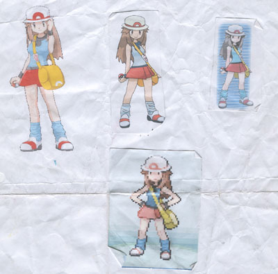
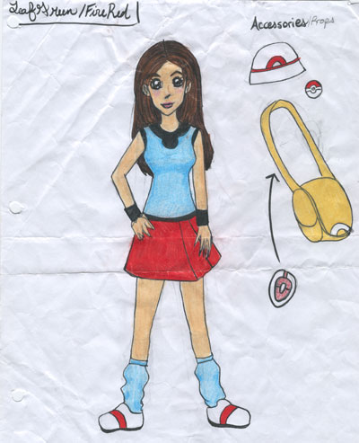
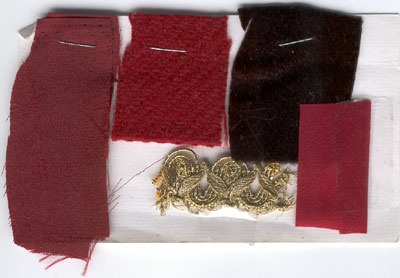

1. Choose a Costume
We've found that the best costumes are the products of love. Love for an era, a character, or even just a
certain look. (Or a friend who really wants you to dress up with them. Thanks Tricia!)
We've also found tha the most fun costumes are group costumes. Those late night-before-the-con sewing sessions make great memories
and the "Oh crap I just cut my pinky off!" moments make great pictures. (He went to the hospital and got stitches, he was ok!) And the
final effort is more rewarding when you have people to bask in the glory with you as you walk around the con in your group being awesome.
That said, the
easiest costumes are those that are well planned. Hopefully the following tips can ease your mind a little
as you bring your amazing creation to life!
Should I pick a character who I look like/who looks like me?
There are pros and cons to both. If you pick a character who DOES look like you, it's less work for you in the long run.
If you pick a character who doesn't look anything like you, it's more rewarding and impressive when you put in the work and pull it off.
I've done both--Sailor Jupiter is a white girl with long curly brown hair, like me. Rock Lee is a 12 year old asian ninja boy...not like me.
What if everyone else has already done that character?
Who cares? Do what you want to do, and do it well. It's your costume, after all.
Is there something wrong with buying a costume instead?
No, of course not. It's not wrong at all. Just less cool.
2. Find Reference Images
Search for pictures of the costume you want to make. This can be harder than it sounds. If you want a really accurate
costume, a quick google search may get you what you need. You might need to pop in the DVD and get screen captures of the
costume, or look for fan sites or costume websites. Don't forget to find pictures of the back, sides, bottoms, tops, whatever
of the costume and any props and details that you want to make.
Collect all of the pictures into a folder on your computer, then pick out the best ones and
print them. It's essential to have
the references printed out so that you can take them to the fabric store. I can't tell you how many times I've gone to Hobby Lobby and thought
"Hm, I think that is the right color blue," and then gotten home and been totally and completely wrong. It sucks! Even professional
costume people bring their reference pictures when going fabric shopping!

These are the reference pictures I saved and printed for my
Leaf Green costume. You can see that this page
got pretty beat up--I took it everywhere with me!
3. Find Previous Versions
Go to sites like
cosplay.com, google images,
cosplaylab.com, etc. and search for pictures of other people's versions of the costume
that you want to make. Compare those images to your reference images and decide what you like and don't like about
the costumes you see there. Also look for tutorials about how other people have made the costume you want to make.
Theres no law saying that you have to follow any tutorial that you find--feel free to pick the best or the easiest
tutorial and follow it. Many costumers are very helpful and if you email or message them politely, they will tell
you how they made their costume. Dont be afraid to ask, even if you are a beginner--we all were beginners once!
When asking questions, it's always better to be specific. For example;
"Where did you find that material?"
"Which pattern did you use for that dress?"
"How did you get the wig to stand up so tall?"
"Did you use fake eyelashes or mascara to make your eyes like that?"
4. Make a Game Plan
Decide
how you're going to make it and
what materials you'll need to make it. I use pictures and lists to
keep everything organized.

Materials List
To Buy
Light Blue Jersey Knit (for shirt, socks)
Black Jersey Knit (for shirt trim,
Elastic (for socks)
Red Bias tape (for shoes, hat)
Red Felt (for shoes, hat--backup)
Gold Twill/Canvas (bag)
Gold Thread (bag)
White flannel/felt (bag)
White hat
White Slip-On shoes
5. Keep A Swatch
Along with your references, you should keep swatches (little scraps) of each fabric/trim that you use in your costume so that you can
coordinate that the colors and textures will match up. This the swatch I had for my Azula costume. For Azula, the swatch was especially
important because I wanted a variety of textures that would still say "princess" rather than being accurate to the plain colors
of an animated show.
